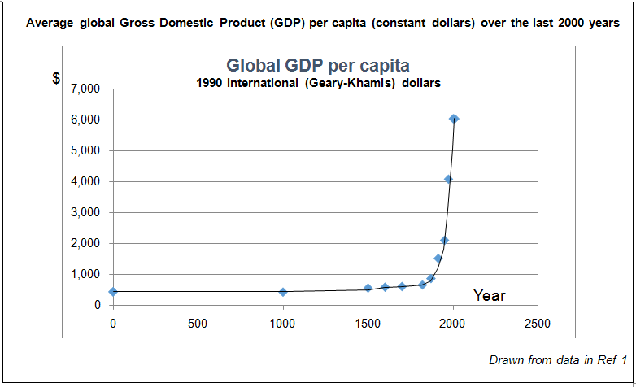

The chemical sciences have made massive contributions to wealth and health during the last two centuries.
Wealth: The chart below plots average global Gross Domestic Product (GDP) per capita, expressed in constant dollars, over the last 2000 years.1 It illustrates that global GDP per capita remained fairly constant until just a couple of hundred years ago, but then began to rise increasingly steeply.
- An important precursor to the steep rise in average global wealth was the Agricultural Revolution, which in Europe took place in the 17-19th centuries. By greatly increasing agricultural output, it liberated large numbers of people from growing food and they moved to the towns and cities where the industrial revolution benefitted from their labour. The chemical sciences made a major contribution to this growing global wealth:2
- • Since 1800, the field of electrochemistry laid the foundations for the electrochemical industry, including the generation of electrical power, its storage in portable forms in batteries, and electrolysis processes providing valuable industrial materials.
Average global Gross Domestic Product (GDP) per capita (constant dollars) over the last 2000 years
- • Synthetic chemistry began making big advances in the 1840s and 50s with work on the aniline dyes. As well as directly stimulating new fashion industries, the expertise that began to accumulate in the scale-up and commercialization of synthesis processes very soon led to major growth in organic chemicals industries.
- • The foundations of biochemistry were laid in the 1860s and paved the way for the development of the biotechnology industry.
- • From the 1830s to the 1930s, work on polymer chemistry created a new set of industries manufacturing materials such as rubbers, fibres, polymers and plastics.
- • Studies on the first synthetic drugs around 1900 created many of the basic principles of medicinal chemistry and gave rise to the modern pharmaceutical industry.
- • The development of spectroscopy and chromatography provided the basis of analytical sciences with applications including food, medicine and the environment.
- • The second agricultural revolution originated in work in the early 20th century on nitrogen fixation and later on the insecticidal properties of DDT, forerunners of a wide range of agrochemical industry products.
- • The demonstration of the first semiconductor effect in 1833 and work over a century later on semiconductors and transistors were important milestones in solid state chemistry. We are currently witnessing an ever-expanding range of applications of solid state electronic devices, including microchips anddisplay devices, that are transforming our lives.
- At the national level, the chemical industry has made major contributions to industrial development and to GDP in many countries.3,4
- Examples of the direct role that chemistry has played in economic development at the national level include:
- • Belgium is a high-income country, with a current GDP per capita of over US$ 45,000. A large part of Belgium’s economic and industrial development since the 19th century can be traced to the chemical industry and life sciences, which currently account for around a fifth of the manufacturing sector.5
- • Taiwan, with a current GDP per capita over US$ 20,000, transformed its economy during the second half of the 20th century, with national planning and investment in chemistry capacity playing a key role. Between the 1950s and 1990s, Taiwan’s per capita GDP rose eight-fold to over US$ 7,000 and in the 1990s the chemical industry was the largest industrial sector, contributing a quarter of the total production value. As well as technical and strategic factors, there was a crucial political component to Taiwan’s success in the chemical industry sector – there was strong support by the government, including well-planned industrial zones and tax, investment and export incentives.6
Averagelife expectancy estimates for the world for the last 2000 years

Health: At the dawn of human history, average global life expectancy was less than 30 years – and remained below 30 years until the second half of the 19th century. It then began to increase very rapidly and more than doubled during the 20th century7. Over the past 150 years, average global life expectancy at birth has increased by roughly three months per year.
- Economists have attributed most of the increase in life expectancy to improvements in health technology, while income growth was responsible for the rest. For example, Richard Easterlin concluded that the decline in 20th century mortality had its origin in technical progress– where the term ‘technical progress’, as used by economists, refers to technological advances; their diffusion and uptake in different countries; and the capacities of the countries themselves to conduct and apply research.8
- The chemical sciences have been very major contributors to this technical progress and to the attendant dramatic increase in average global life expectancies:
- • An important underpinning development was the Agricultural Revolution, which ensured that people were better fed and not malnourished.
- • The field of immunization began with the demonstration that cowpox could be used to inoculate against smallpox. Subsequently, the chemical sciences have been fundamental to the development vaccines against a wide range of deadly diseases.
- • The demonstration around 1830-50 of the anaesthetic effects of certain volatile liquids and gases that had recently become available by chemical synthesis was a vastly important step for medicine, enabling advances in surgery and dentistry that were completely impractical before the development of anaesthesia.
- • The era of public health dates from work by John Snow and others in the mid-19th century on contaminated public water supplies. Water purification and analysis remains one of the cornerstones of modern public health.
- • The foundations of biochemistry and of our understanding of the bacterial origin of infections were laid by the work of Louis Pasteur in the 1860s.
- • The foundations of medicinal chemistry were laid around 1900 with the synthesis of analgesics and antibiotics.
- • The basis for metabolic medicine came from work by Casimir Funk, who isolated the first vitamin compounds and published his vitamine theory in 1912; 10 years later Frederick Banting showed that diabetes was the result of a deficiency of the hormone insulin, which he isolated and successfully used to treat diabetic patients.
- • The modern antibiotic era really took off with Alexander Fleming’s discovery of penicillin and introduction by Gerhard Domagk of the synthetic sulfa drugs in 1935.
- • The anti-cancer era began in the 1940s with the work of Louis Goodman and Alfred Gilman on nitrogen mustard agents and anti-folate compounds.
- • The transplant era was initiated in 1954 when Joseph Murray carried out the first successful human organ transplant – a transplant of a kidney between identical twins – but the real benefits could not become more generally available until the natural product cyclosporin was isolated in 1969 and its immunosuppressive properties were discovered. It first began to be used clinically in 1980 to prevent organ rejection.
- • ‘Science-based’ drug development began in the 1960s, as a more systematic, experiment-led approach to discovering compounds with desired biological activities.
- • The current era of gene-based medicine can trace its origins, among other things, to the development by the twice Nobel Prize-winning chemist Frederick Sanger and others of methods for the chemical sequencing of DNA, which enabled the inception in 1990 of the project to map the human genome.